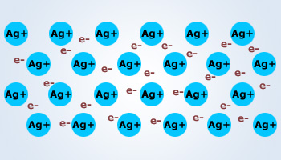
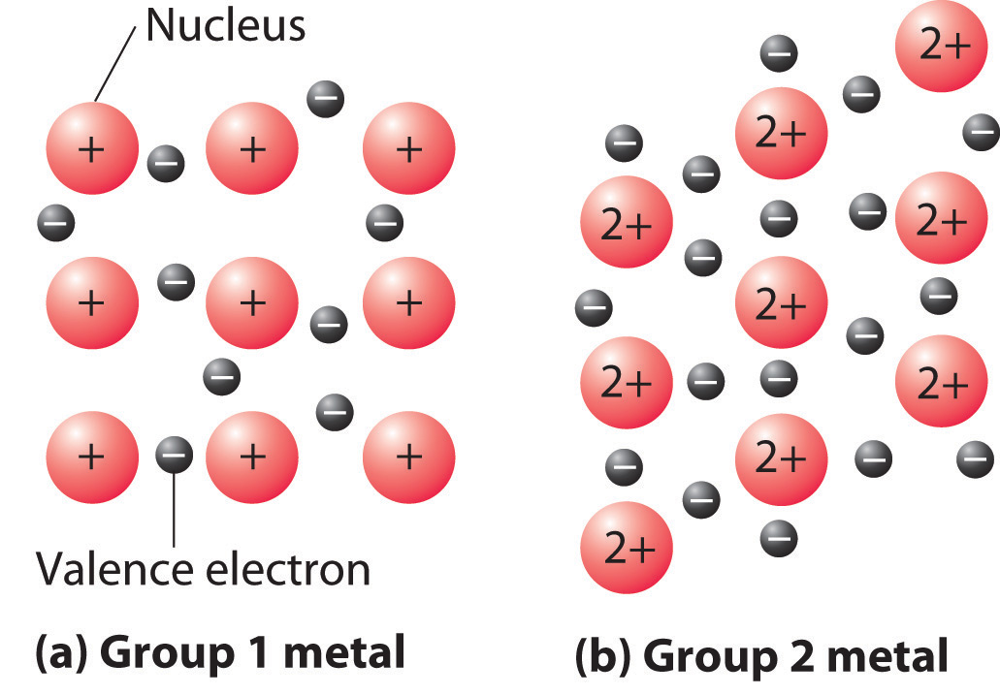
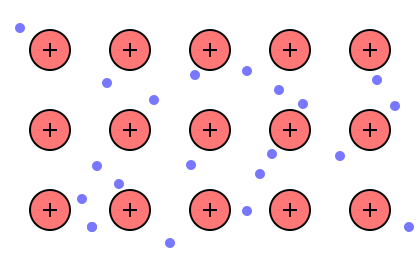

Subatomic Freedom
Metallic bonds are the least-known of the three major chemical bonds. In a metallic bond, each atom donates one or more of its electrons into a common "sea" of electrons that exists
between many metal atoms. Each electron, because of its quantum nature and wave-particle duality
, exists as a wave and particle amongst the nuclei of metals. A net positive charge is experienced, because each electron exists independent of an atom. Interestingly,
Metallic Bonding and Metallic Properties
Such a means of bonding results in extreme tensile strength, a well-known characteristic of metals. However, this strength is collective to the mass itself, rather than any distinct shape. This
results in metal crystals being easy to deform, giving them the physical characteristics of malleability and ductility. Likewise, having a common sea of electrons does wonders for the conductivity
of the substance. Metallic bonds allow metals to easily conduct electric current as well as thermal energy, and reflect the majority of light frequencies, giving them the characteristic luster.



Top-bottom: The metallic bonding of: silver, any group I or group II metal, and a placeholder group I metal.